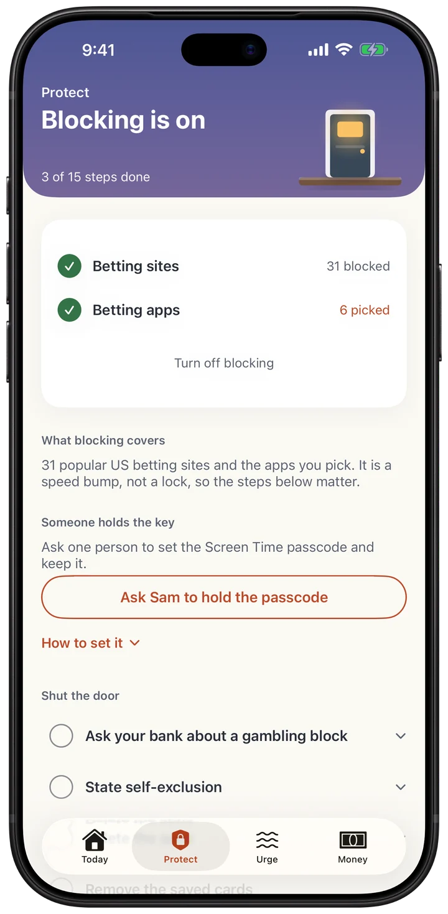
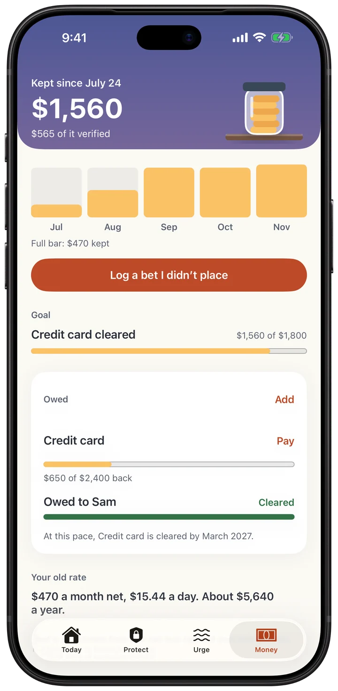
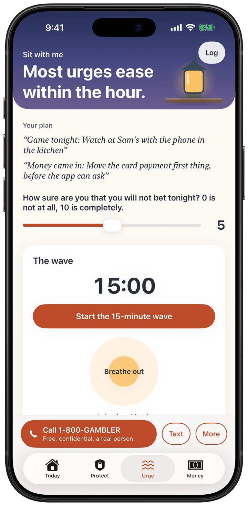

BetKeep is an iPhone app for quitting gambling: sports betting, prediction markets, online casino, poker, lottery, or trading. It blocks betting apps and sites, counts the nights you win and keeps the money you would have lost.
Turn on blocking and BetKeep uses Apple's Screen Time to block 31 popular US betting sites and the betting apps you pick. Turning it off inside BetKeep takes 24 hours. It is a speed bump, not a lock, so BetKeep also walks you through the steps that back it up: your bank's gambling block, state self-exclusion, deleting the apps and removing saved cards.
It knows the nights the games are on and shows your plan before each one. When the urge hits there is your plan, a 15-minute wave and your region's helpline. At the end of the night you hold to close it. Everything stays on your iPhone.

Block betting apps and sites
31 popular US betting sites and the apps you pick.

See the money you kept
Kept, paid back, and the day the debt clears.

When the urge hits
Your plan, a 15-minute wave, a person to call.
The details
Price
Free. Plus is optional: $9.99 once (US price). No subscription.
Ads
None
Account
None. No sign-up, no server.
Privacy label
Data Not Collected
Works offline
Yes
Needs
An iPhone with iOS 17.0 or later. Blocking needs Screen Time access.
Checked against the App Store listing on November 19, 2026.
Support
Found a bug, or want something added? Email me at minieriapps+betkeep@gmail.com. I make BetKeep on my own and read every message. Give me a couple of days to reply.
If you're in crisis
988 Suicide & Crisis Lifeline: call or text 988 (US and Canada)
National Problem Gambling Helpline: 1-800-GAMBLER, or 1-800-MY-RESET (call, text or chat)
BetKeep is a personal companion. It is not a medical device, does not give medical or financial advice or treatment, and is not a substitute for professional help. In the United States you can call 1-800-GAMBLER at any hour.
Blocking
Blocking uses Apple's Screen Time. It is a speed bump, not a lock. You can turn it off, which takes 24 hours inside BetKeep, and it cannot block every betting app or site.
One-time purchases
When the app says a purchase is yours "forever", "for good" or for a "lifetime", it means this: you pay once, there are no renewals, and what you bought stays unlocked for as long as the app is available and supported on your device. It is tied to your Apple Account, so you can restore it on your other devices.
"Forever" and "lifetime" refer to the life of the app, not to your lifetime or to a fixed number of years. Features may change, and the app may stop being updated or be withdrawn from the App Store. If that happens, the version on your device may keep working, but it cannot be promised to run on future versions of iOS or on future devices.
A one-time purchase covers the features described when you bought it. It is never turned into a subscription.
Things described as free
Where the app says something is free "forever", it means there is no plan to charge for it, and nothing you already rely on will be moved behind a payment without the app saying so clearly first. It is not a promise that the app will always exist.
These terms may change, and the date above shows the latest version. Nothing here limits the rights you have under the consumer law of the place where you live.
Privacy Policy
Last updated: November 19, 2026
BetKeep does not collect, transmit, sell, or share any of your data. There is no account, no login, and no server.
What we collect
Nothing. The app has no analytics, no ads, no third-party SDKs, and makes no network requests. Because there is no backend, your data physically cannot reach us.
Where your data lives
Only on your iPhone, in Apple's on-device database. Delete the app and the data goes with it. Use the built-in backup, or the CSV/PDF export, to keep your own copy.
Notifications
If enabled, reminders are scheduled locally on your device and are not sent through any server.
Blocking and Screen Time
Blocking is optional. If you turn it on, iOS asks for Screen Time access and you pick the betting apps in Apple's own picker. BetKeep gets a private token for each choice, enough to put the block in front of it. It cannot see which apps you picked or how you use them. The list of betting sites is built into the app. Nothing about blocking leaves your iPhone.
Face ID and the app lock
BetKeep does not collect, access, store, or share face data. The optional app lock (in BetKeep's Settings, off by default) uses Apple's LocalAuthentication framework: iOS performs the Face ID, Touch ID, or passcode check itself and tells BetKeep only whether it succeeded. Your face data stays in your device's Secure Enclave under Apple's control; BetKeep never receives it, so there is nothing for us to use, retain, disclose, or share with any third party. To withdraw permission, turn the lock off in BetKeep's Settings, or switch off Face ID for BetKeep in the iOS Settings app (Face ID & Passcode › Other Apps). Because BetKeep holds no face data there is nothing for it to delete; your enrolled face is managed, and can be removed, only in iOS Settings › Face ID & Passcode.
Get Help and block setup links
The in-app helplines, self-exclusion registers, bank guides, and blocker apps are third-party services listed for convenience; calling or opening them connects you directly to them, not through BetKeep. Which of them you have set up is recorded only on your device.
In-app purchase
BetKeep Plus is an optional one-time purchase handled entirely by Apple's App Store. BetKeep never sees your payment details; Apple's own privacy policy applies to the transaction.
Children
BetKeep does not knowingly collect information from anyone, including children.
BetKeep is a personal companion. It is not a medical device, does not provide medical advice, diagnosis, or treatment, and is not a substitute for professional help. It does not offer wagering, odds, or links to gambling operators.